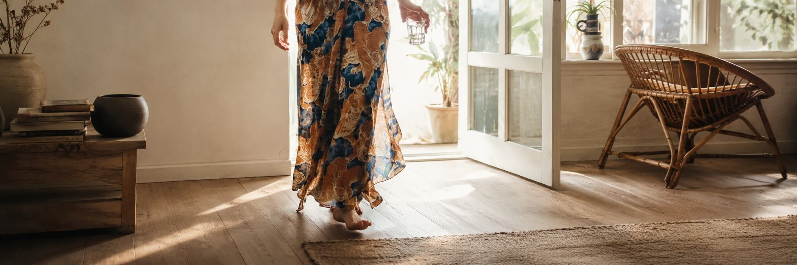
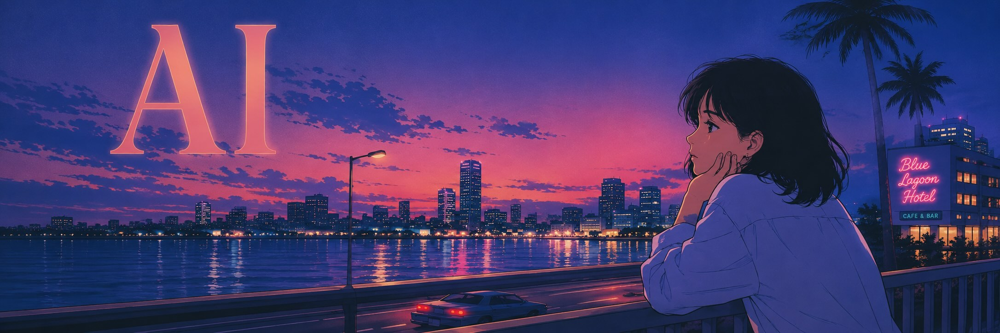
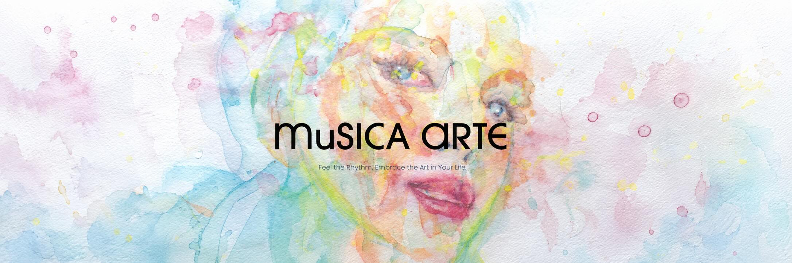
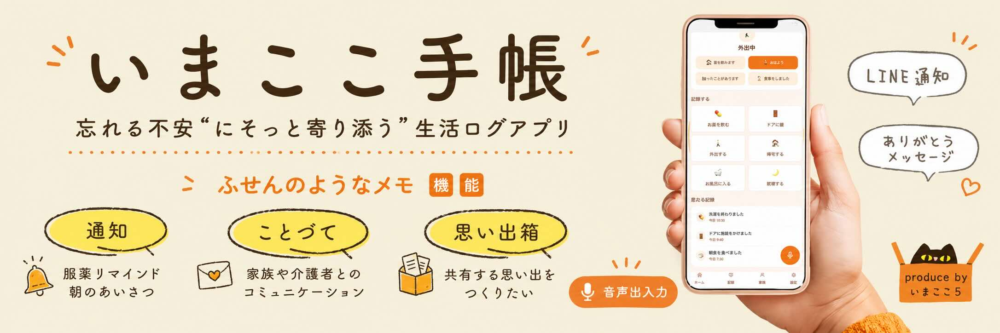
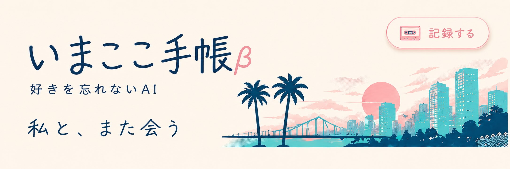

PROFILE

文化を読み解き、かたちにする
はじめまして、マンダリーナです。
私の関心の中心にあるのは、世界の文化と人の暮らしの中にある物語。旅先で出会う手仕事、風習、土地ごとの美意識を読み解き、現代の暮らしに合う商品や表現へとつなげることに魅力を感じています。
また、AIやアプリ開発を通して、人の記憶や体験、日常を支える仕組みづくりにも取り組んでいます。文化とテクノロジーを行き来しながら、人の暮らしに新しい視点とやさしい広がりを生み出していきたいと考えています。
これまでのサイトはこちら
AI & ME

自分にとってAIとは(事後)
「思考を支えるパートナー」という発想は、2025年の企画段階ですでに芽生えていたが、当時はアイデアの一つに過ぎなかった。この1年、Claude・ChatGPT・Geminiを毎日使い込み、3つのAIをチームとして扱うことで、構想を一人で深く具体化できるようになった。同時に、AIは思考を深め悩みを解決する存在だけでなく、生活に寄り添い、自分自身を思い出させてくれる存在にもなり得ると気づいた。一方で、人へのヒアリングで得た発想はAIの答えの延長線上にはない、遠くの一点のような視点だった。AIの解像度が上がるほど、人間の思考の奥深さも際立って見えた3ヶ月だった。
①知識を引き出す存在
AIは、膨大な情報の海から、今の自分に必要な知識やヒントをすくい上げてくれる存在です。
ただ調べるだけではなく、関心に合わせて整理し、言葉にしてくれることで、新しい学びや発見への入口をつくってくれます。
②思考と制作を支えるパートナー
この3ヶ月で、AIは答えを出すだけの道具ではなく、考えを一緒に育ててくれるパートナーだと感じるようになりました。
対話を重ねることで、まだ曖昧だった思いや企画が少しずつ輪郭を持ち、文章やアプリの形へと近づいていきます。
③未来を問い続ける技術
AIには、人の暮らしを助け、可能性を広げる力があります。
一方で、使い方によっては管理や依存が強まり、人らしさを見失う未来につながるかもしれません。だからこそ、便利さだけでなく、人にとってやさしい技術であるかを問い続けながら向き合っていきたいです。
Web3. 2024

NFTマイクロギャラリーを作る(Musica Arte)
web3の時代が来た時に、インターネットに疎い中高年以上の人々はついていくことができるだろうか。NFTとアートの相性はよく、2021年のNFTバブルがひと段落し落ち着いてきた。気に入った作品からweb3の世界に慣れ親しんでもらえるのではないか。
日本には美術館だけでなく、小さな個人ギャラリーが多い。絵画だけでなく、工芸品、陶芸、書道、生活雑貨、古いおもちゃなど様々。web3.0の未来も、たくさんの個性的なギャラリーが人々の生活を豊かにしていくのだろうか。街の片隅にあるような、自分の好きなものを集めたちょっとレトロな小さなギャラリー。ショーウィンドウには店主の好きな1枚の絵。そんなイメージをもとにマイクロギャラリー、Musica Arte(ムジカアルテ)を立ち上げたいと考えた。
使用ツール
WordPress, Elementor, Adobe Firefly(AI), ChatGPT
レポート
Web3&AI. 2025

いまここ手帳 by imakoko5
“忘れる不安”にそっと寄り添う生活ログアプリ
高齢者が感じる「忘れてしまう不安」に寄り添う生活ログアプリ『いまここ手帳』。声や簡単な操作で日々の行動を記録し、自分の暮らしをふんわりふりかえられる安心を提供。家族もそっと見守れる、やさしいUXを目指します。
使用ツール
Replit, v0, ChatGPT
管理
Web3&AI. 2026

いまここ手帳β
好きを忘れない。積み重なった自分と、もう一度つながる。
老後や認知機能の低下による「自分らしさを失う不安」に対し、AIエージェント「Future Me」が日々の記録から人生のテーマや好きを見つけ出し、積み重なった自分との再会を支援するライフログアプリです。
写真、メモ、タグ、場所、URLを記録し、Future Meが問いかけ、未来の自分に寄り添うAIを育てます。
使用ツール
・実装:Gemini Vision / Gemini API、JavaScript、Vercel、GitHubを使用
・アプリ制作:Antigravity, Claude Code, ChatGPT
おまけ:あれなんだっけアプリ